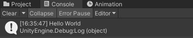

Dans Unity, le langage de programmation est le C#. Les srcipts sont les composantes qui contiennent le code.
Un script est aussi appelé une classe dans Unity. C'est un ensemble de fonctions qui seront exécutées.Voici la structure type d'une classe:
La première section est celle des NameSpace. On la remarque par l'utilisation de using avant chaque terme. Elle détermine quelles classes seront utilisées dans ce script. On laisse celles qui sont présentes par défaut. D'autres peuvent être ajoutées au besoin:
- using UnityEngine.UI; Permet de modifier certaines composantes comme les boutons.
- using UnityEngine.Video; Permet de modifier les composantes reliées à la lecture de vidéos.
- using UnityEngine.SceneManagement; Permet de faire des changements de Scene à partir du code.
- using TMPro; Permet de modifier le texte des objets qui ont une composante Text Mesh Pro.
Après les nameSpace, on aperçoit public class... Ici, script2 est le nom de mon script. On laisse cette ligne telle quelle, c'est elle qui annonce que tout ce qui suit fera partie de la classe de mon script.
Après le nom de la classe, j'ai inscris private int myInt. C'est à cet endroit qu'on doit déclarer toutes les variables qui seront utilisées dans notre script on peut déjà leur donner des valeurs ou attendre à plus tard.
Maintenant, il reste les Fonctions Start et Update. Ainsi, dans cette section, on crée les fonctions qui contiendront le code.
Dans Unity, la fenêtre console est importante pour trouver les problèmes dans les scripts ou pour faire le suivi de valeurs. Cette fenêtre se trouve au bas de votre écran, c'est un onglet de la fenêtre Project.
Pour imprimer une valeur ou un texte dans la console, il suffit d'inscrire Debug.Log et de mettre ce qu'on veut imprimer entre parenthèse. Ici, j'ai utilisé les "" pour imprimer une phrase, mais j'aurais aussi pu écrire le nom d'une variable int comme myInt pour imprimer sa valeur.
Voici une liste des opérateurs courants dans Unity:
- += (myInt += 2;) additionne 2 à myInt
- -= (myInt -= 2;) soustrait 2 à myInt
- ++ (myInt ++;) additionne 1 à myInt
- -- (myInt --;) soustrait 1 à myInt
- *= (myInt *= 2;) multiplie myInt par 2
- /= (myInt /= 2;) divise myInt en 2
- %= (myInt %= 2;) calcule le reste de la division de myInt par 2
- +, -, * et / peuvent aussi être utilisés entre 2 nombres
Dans Unity, on utilise fréquemment les conditions pour vérifier si un élément est vrai avant d'exécuter une portion de code. Une condition s'écrit de la façon suivante:
Si ma condition est vrai, donc que la variable myInt est égale à 2, on exécutera le code qui est entre les {};
Outre les ==, il existe d'autres opérateurs pour valider si une fonction est vraie:
- != (Pas égal à)
- < (plus petit que)
- > (plus grand que)
- <= (plus petit ou égal)
- >= (plus grand ou égal)
Il est possible de vérifier plus d'une condition grâce à &&:
Ici, on vérifie si myInt est plus grand ou égal à deux et plus petit que 10. Si c'est le cas, le code sera exécuté.
On peut utiliser || pour choisir l'une ou l'autre des conditions, ainsi si myInt est plus grand ou égal à deux ou égal à 0, le code entre {} sera exécuté.
Dans Unity, les boucles sont souvent utilisées pour compter des éléments ou interagir avec les tableaux.
Ci-haut, on crée une boucle dont le code sera exécuté 3 fois avant que le code qui le suit s'exécute.
Dans Unity, une pratique courante lorsqu'on crée une boucle est d'utiliser la longueur d'un tableau plutôt qu'un chiffre fixe. Ainsi, ci-haut ma boucle sera répétée autant de fois qu'il y a de chiffres dans le tableau myInts[]. Cela permet de ne pas avoir à changer le code à chaque fois que notre tableau change en longueur.